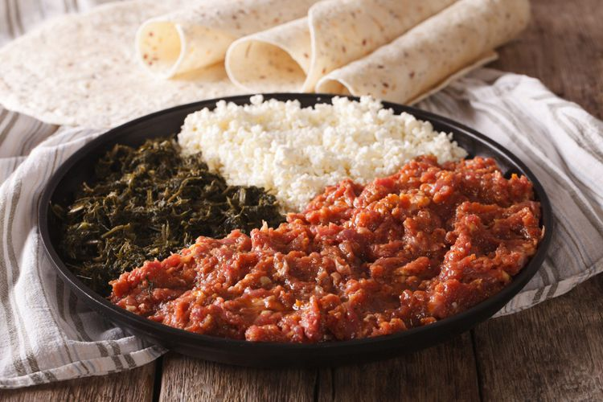

Kitfo

Description:
A traditional Ethiopian dish made from raw minced beef, seasoned with spices and clarified butter, often served with a side of greens and cheese.
Ingredients
- 1 pound raw ground beef (preferably lean)
- ½ cup clarified butter (niter kibbeh)
- 2 tablespoons mitmita (Ethiopian spice blend)
- Salt to taste
- 1 cup chopped collard greens (optional)
- 1 cup ayib (Ethiopian cheese, optional)
Steps
- In a bowl, combine the ground beef with mitmita and salt. Mix well.
- In a skillet, melt the clarified butter over low heat. Add the seasoned beef and cook for 2-3 minutes, stirring gently. The beef should remain rare.
- Serve the Kitfo warm, accompanied by chopped collard greens and ayib if desired.
Home